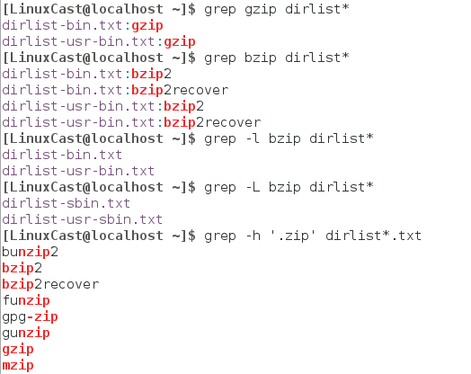

1、grep：global regular expression print
-l 输出包含匹配内容的文件
-L 输出不包含匹配内容的文件
-h 只输出匹配内容，不输出文件
2、原义字符，元字符
元字符可以展开，原义字符则是一一对应
'.' : 表示任意字符；
没有找到zip程序，这是因为‘zip’的‘.’将匹配内容增加到四个字符。
3、锚点 '^’'$'
锚点意味着只有正则表达式在文本的开头或者结尾找到时，才算发生一次匹配。
grep -h '^zip'

? 在字典中寻找，第三个字符是j最后一个是r，由五个字符组成的单词

4、中括号表达式：匹配一个指定字符集合中任意一项

5、否定： [^xx] 被看作是一个不会在给定位置出现的字符集合
这个插入字符如果是中括号表达式中的第一个字符的时候，才会唤醒否定功能
搜索一个‘zip’前既不是‘b’也不是‘g’字符的匹配内容：
注意文件 zip 没有被发现。一个否定的字符集仍然在给定位置要求一个字符，但是这个字符必须不是否定字符集的成员

6、传统字符区域：[A-Za-z0-9] 三个字符区域

当做正常的连接符

7、可移植字符集 （POSIX:Protable operatting system interface of Unix）
Ascall排序规则：
ACBEFGHIJKLMNOPQRSTUVWXYZabcdefghijklmnopqrstuvwxyz
ordinary order：
aAbBcCdDeEfFgGhHiIjJkKlLmMnNoOpPqQrRsStTuUvVwWxXyYzZ

POSIX 标准介绍了一种叫做 locale 的概念，其可以被调整，来为某个特殊的区域，选择所需的字符集。通过这个设 置，POSIX 相容的应用程序将会使用字典排列顺序而不是 ASCII 顺序。这就解释了上述命令的行为。当 [A-Z] 字符区域按照 字典顺序解释的时候，包含除了小写字母“a”之外的所有字母，因此得到这样的结果。

POSIX 标准包含了大量的字符集，其提供了有用的字符区域：

8、BRE(basic regular expression)和ERE(extend regular expression)
BRE支持一下元字符：
^ $ . [ ] *
其它的所有字符被认为是文本字符
ERE在BRE的基础上增加了一些元字符
( ) { } ? + |
在 BRE 中，字符“(”，“)”，“{”，和“}”用反斜杠转义后，被看作是元字符, 相反在 ERE 中，在任意元字符之前加上反斜杠会导致其被看作是一个文本字符。
9、Alertnation（替换）:‘|’
在扩展正则表达式中，替换特性允许从一系列表达式之间选择匹配项的使用程序

为了支持Alertnation和其他正则表达式特性一起使用，可以利用‘（）’进行隔离。

10、？-匹配零个或一个字符，使前面的元素可有可无

11、*-匹配零个或多个元素

+ - 匹配一个或多个元素，前面的元素至少出现一次匹配

{} -匹配特定个数的元素